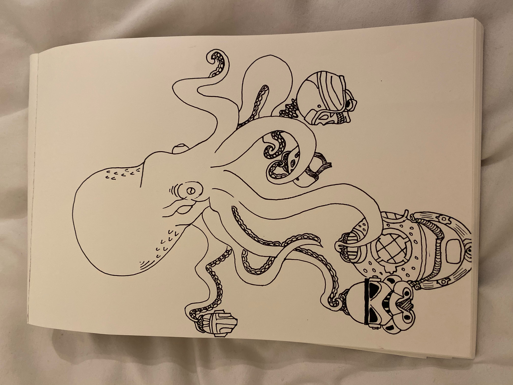

Who controls your actions? Does free will exist? Maybe what drives us is a seafaring mollusc. Deep State Mind Control is an interactive art concept based on a large octopus. The tentacles of the structure lead to helmets with speakers. A microphone inside the head of the creature allows an operator to control the participants individually.

Generated by jon-doc